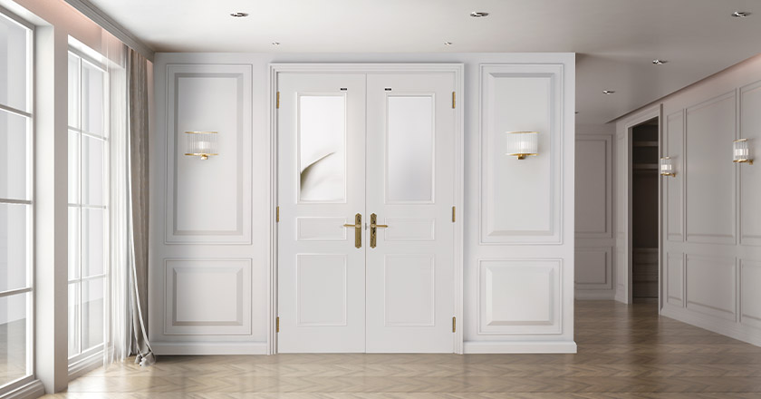

인테리어 중문은 실내 공간에서 구분과 연결을 위해 사용되는 문입니다. 주로 개인의 민간 공간인 방이나 부엌, 거실, 화장실 등 다양한 공간에서 사용됩니다. 인테리어 중문은 디자인과 기능성을 모두 고려하여 선택되며, 공간의 분위기를 조절하고 동시에 사생활과 보안을 보장합니다.
인테리어 중문은 다양한 디자인과 재료로 제공됩니다. 목재 문은 클래식하고 따뜻한 느낌을 주며, 강화유리 문은 공간을 확장시키고 밝은 분위기를 조성합니다. 또한 미니멀한 디자인이나 모던한 스타일의 문도 인기가 있습니다. 기능적인 면에서 인테리어 중문은 방음, 방충, 방화 기능이 있는 제품들이 있어 쾌적한 환경을 조성하고 안전성을 높일 수 있습니다. 또한 일부 중문은 내부에 적절한 격리공간을 갖춰 사적인 공간을 보호할 수 있도록 설계되어 있습니다.
중문은 공간의 크기와 비율, 인테리어 디자인과 색상과의 조화를 고려하여 선택해야 합니다. 적절한 크기와 디자인으로 선택하면 공간 전체의 분위기를 더욱 향상시킬 수 있습니다.
마지막으로, 중요한 것은 문의 설치입니다. 정확하고 안전한 설치를 위해 전문가의 도움을 받는 것이 좋습니다. 문의 올바른 설치는 사용성과 수명을 보장하며, 안전하고 편안한 공간을 만들어줍니다. 인테리어 중문은 실내 공간의 디자인과 기능을 완성시키는 중요한 요소로, 잘 선택하고 설치하면 보다 아름답고 편안한 공간을 조성할 수 있습니다.